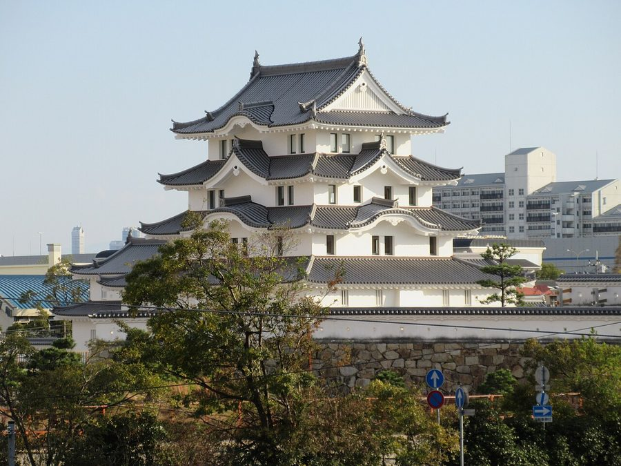
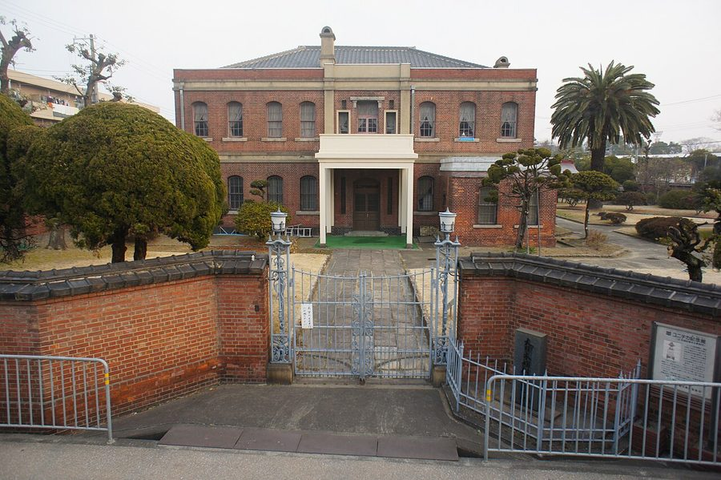
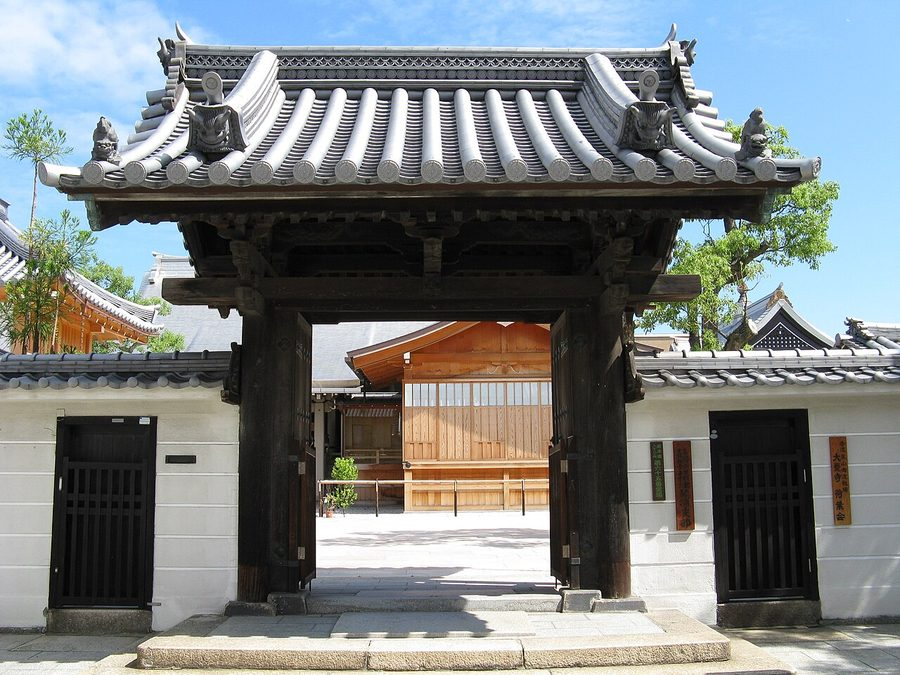
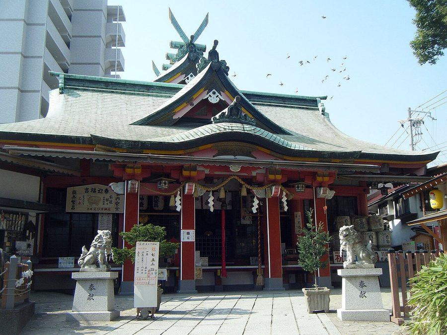

兵庫県尼崎市の日帰り温泉・銭湯・サウナ（22件）
寄り道スポット検索アプリ「ヨッテコ」の収録データから、兵庫県尼崎市の日帰り温泉・銭湯・サウナを営業時間・料金つきで一覧にしました（2026年8月時点）。
最も安いのは笹乃湯（350円）。最も遅くまで入れるのは湯あそびひろば ふくずみ温泉（翌1:00まで）。朝風呂ならゆ〜もあらんど福栄（6:00開店）。
兵庫県尼崎市はどんなまち？
数字で見る🔍兵庫県尼崎市
まちの横顔




- 地形: 兵庫県の南東端に位置し、南は大阪湾に面します。西は西宮市、北は伊丹市、北東は豊中市、東は大阪市に接し、大阪府以外では唯一大阪市に隣接する自治体です。市域は大阪平野に含まれ、南部の臨海エリアは海抜０メートル地帯で、たびたび洪水に悩まされてきました。昭和初期以降の地盤沈下も一因で、1954年建設の防潮堤は東日本大震災後から補強工事が進んでいます。
- まちの成り立ちと産業: 尼崎藩の城下町を中心に、阪神工業地帯の工業都市として発展しました。臨海部や名神高速道路・JR福知山線沿いの工業地域、阪神尼崎駅・JR尼崎駅周辺の商業地域のほかは住宅地が大半を占め、大阪のベッドタウンと工業都市の両方の性格を併せ持つまちです。神戸市・姫路市・西宮市に次ぐ兵庫県内第4位の人口規模で、人口密度は県内市区町村で最も高くなっています。
- 再開発: 近年はJRや阪神の沿線を中心に高層マンション群やショッピングセンター、巨大物流施設が見られるようになりました。JR尼崎駅北側では、アミング潮江やあまがさき緑遊新都心といった大規模な再開発地域が整備されています。
寄り道充実度（全国偏差値）
偏差値・順位は、ヨッテコ収録データ（2026年8月時点・26,033件）を市区町村別に集計した施設数の全国分布（1,728市区町村）から毎回算出しています。カードを押すとカテゴリ別の分析に切り替わります。
日帰り温泉から見た兵庫県尼崎市
21時以降も営業する店は95%、全国水準（40%）の2.4倍。——何軒あるかより、どんな湯かで語れるまち。
- 天然温泉を使う店は36%で、全国水準（67%）を下回ります。温泉地というより、暮らしの延長にある入浴施設が数を支えています。
- サウナがある店は86%、全国水準（52%）の1.7倍。湯とサウナをセットで考えるまち、と言えそうです。
- 21時以降も営業する店は95%、全国水準（40%）の2.4倍。尼崎藩の城下町を起源とする市。一日の終わりに一風呂、という選択肢が残っています。
- 22件で確認できた入浴料の中央値は560円で、全国水準（650円）を14%下回ります。気軽に立ち寄れる金額に収まっています。
出典: 施設データ=ヨッテコ収録データ（26,033件・2026年8月時点）。偏差値・全国順位・全国水準は全1,728市区町村の分布から毎回算出。 / 人口=総務省「住民基本台帳に基づく人口、人口動態及び世帯数」（2026年1月1日現在） / 面積=国土地理院「全国都道府県市区町村別面積調」（2026年4月1日時点） / 森林率=農林水産省「2025年農林業センサス（農山村地域調査）」市区町村別林野率（2025年、林野率（林野面積÷総土地面積）） / 年平均気温=気象庁「平年値（1991-2020年）」。市区町村の代表点（国土交通省「大字・町丁目レベル位置参照情報」）から最も近い観測点の値 / まちの解説=日本語版Wikipedia「尼崎市」（https://ja.wikipedia.org/wiki/尼崎市、2026年8月21日取得、CC BY-SA 4.0） / 写真=Wikimedia Commons（各キャプションに作者・ライセンスを記載）
曜日別の営業施設数
| 月 | 火 | 水 | 木 | 金 | 土 | 日 |
|---|---|---|---|---|---|---|
| 19 | 19 | 19 | 20 | 19 | 21 | 20 |
月・火・水・金曜日が最も休みが多く（各3件が定休）、年中無休は6件です。※営業時間データのある22件で集計
入浴料金の分布（大人）
| 500円以下 | 8件 | |
| 501〜800円 | 12件 | |
| 801〜1,200円 | 2件 |
料金が確認できた22件で集計。
施設一覧
| 施設 | 営業時間 | 料金（大人） |
|---|---|---|
| つかしん天然温泉 湯の華廊 天然温泉露天風呂サウナ 尼崎市の温泉施設で、天然温泉と人工炭酸泉を組み合わせた入浴体験が特徴。毎週変わる薬草風呂や外気浴スペース「チルスペース」… | 10:00〜24:00 | 950円 |
| みのり湯 露天風呂サウナ みのり湯。 | 15:00〜24:00（月休） | 570円 |
| ゆ〜もあらんど福栄 露天風呂サウナ 早朝6時から深夜24時まで営業の一通り設備のそろった銭湯 | 06:00〜24:00（月休） | 470円 |
| 三興湯 露天風呂サウナ ヒマラヤ岩塩と軟水を融合させた美肌の湯が特徴の大型公衆浴場。ラドン泉、高温サウナ、遠赤外線サウナなど豊富な浴場設備を備え… | 15:00〜22:50 ※曜日により異なる | 430円 |
| 元湯 天然温泉 築地戎湯 天然温泉露天風呂サウナ | 10:00〜23:00 ※曜日により異なる | 570円 |
| 光明温泉 天然温泉露天風呂サウナ 光明温泉。 | 15:30〜22:30（水休） | 480円 |
| 八雲温泉 天然温泉露天風呂サウナ 八雲温泉。 | 15:00〜24:00（木休） | 570円 |
| 天然温泉 蓬莱湯 天然温泉サウナ | 17:00〜23:30 ※曜日により異なる | 550円 |
| 平和湯 サウナ 小ぶりな銭湯。 | 15:00〜22:00（火休） | 570円 |
| 御園新温泉 サウナ | 14:00〜17:30（水休） | 570円 |
| 栄町温泉 天然温泉サウナ 栄町商店街の最西端に入り口がございます。名物「人間洗濯機」超音波ウルトラバスを是非ご利用ください。アーケードからはわかり… | 15:00〜23:00（土休） | 450円 |
| 泉温泉 軟水で皮膚にやさしい | 15:30〜23:00（金休） | 570円 |
| 湯あそびひろば ふくずみ温泉 露天風呂サウナ 兵庫県尼崎市の銭湯。天然漢方・薬草の露天風呂が特徴。複数のサウナと水風呂で多様な入浴体験が可能 | 06:00〜10:00 ※曜日により異なる | 550円 |
| 湯あそびひろば 七松温泉 サウナ 数種類のジェットバスや塩サウナが楽しめる | 14:00〜24:00 | 490円 |
| 玉乃湯 サウナ 広々としたお風呂でゆっくり入浴できる | 13:30〜22:30（日休） | 450円 |
| 白鶴温泉 露天風呂サウナ | 15:00〜22:30 | 570円 |
| 神田温泉 露天風呂サウナ 神戸・尼崎の銭湯。大露天風呂で毎月替わり風呂を開催。豊富な浴室設備が揃う。 | 09:00〜24:00 ※曜日により異なる | 570円 |
| 福寿温泉 サウナ 尼崎市の銭湯。スチームサウナと高温サウナを備える。 | 15:30〜21:30（金休） | 450円 |
| 第一敷島湯 尼崎市の歴史的銭湯。1923年築の建物を現在も使用。円形主浴槽と唐破風の屋根が特色。 | 16:00〜22:30（火・水休） | 570円 |
| 笹乃湯 | 15:00〜22:00（日休） | 350円 |
| 蓬川温泉 みずきの湯 天然温泉サウナ | 00:00〜24:00 | 880円 |
| 長洲温泉 天然温泉サウナ 清潔をモットーに。当湯自慢の薬湯や備長炭の湯も是非ご入浴下さい。菖蒲湯や柚子湯など季節感にこだわった変わり風呂や、スーパ… | 13:00〜23:00 | 520円 |